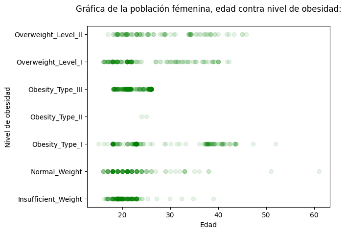

A1.1 Aprendizaje estadístico-automático
# Librerías utilizadas
import pandas as pd
import numpy as np
import matplotlib.pyplot as plt# Se lee la basa de datos
data = pd.read_csv("A1.1 Obesidad.csv")
# Se imprimen los resultados
print(data.head(10)) Sexo Edad Estatura Peso FamiliarConSobrepeso ComeMuchasCalorias \
0 Female 21.0 1.62 64.0 yes no
1 Female 21.0 1.52 56.0 yes no
2 Male 23.0 1.80 77.0 yes no
3 Male 27.0 1.80 87.0 no no
4 Male 22.0 1.78 89.8 no no
5 Male 29.0 1.62 53.0 no yes
6 Female 23.0 1.50 55.0 yes yes
7 Male 22.0 1.64 53.0 no no
8 Male 24.0 1.78 64.0 yes yes
9 Male 22.0 1.72 68.0 yes yes
ComeVegetales Fumador ConsumoDeAgua NivelDeObesidad
0 2.0 no 2.0 Normal_Weight
1 3.0 yes 3.0 Normal_Weight
2 2.0 no 2.0 Normal_Weight
3 3.0 no 2.0 Overweight_Level_I
4 2.0 no 2.0 Overweight_Level_II
5 2.0 no 2.0 Normal_Weight
6 3.0 no 2.0 Normal_Weight
7 2.0 no 2.0 Normal_Weight
8 3.0 no 2.0 Normal_Weight
9 2.0 no 2.0 Normal_Weight
# Se imprimen la cantidad de personas que pertenecen a cada categoría.
print(data.NivelDeObesidad.value_counts())Obesity_Type_I 351
Obesity_Type_III 324
Obesity_Type_II 297
Overweight_Level_I 290
Overweight_Level_II 290
Normal_Weight 287
Insufficient_Weight 272
Name: NivelDeObesidad, dtype: int64
# Gráfica
%matplotlib inline
data = data.sort_values(by="NivelDeObesidad")
plt.scatter(x=data.Edad[data.Sexo=="Female"], y=data.NivelDeObesidad[data.Sexo=="Female"],alpha=0.098, color="green")
plt.title("Gráfica de la población fémenina, edad contra nivel de obesidad:\n")
plt.xlabel("Edad")
plt.ylabel("Nivel de obesidad")
plt.show()
Nombre: Jonathan Emilio Humphreys Rodríguez
Matrícula: 504065
Código de honor: Doy mi palabra de que he realizado esta actividad con integridad académica.